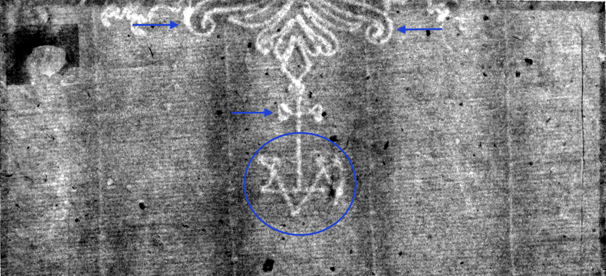

Eagle, Single-Headed
↩ Back one step ↻ Restart this branch See branch diagramYour watermark is Eagle with Basel Crosier, Single-Headed, D.a.
There are three distinguishing features of watermark D.a. which can be identified from this fragment: there is a cross extending from the eagle's tail, several letters below the cross, and two tail feathers curl inward. (Marked with blue.)
